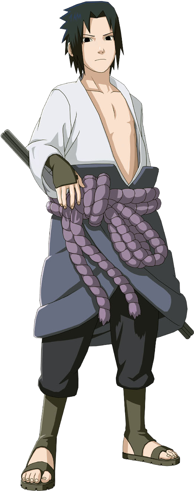
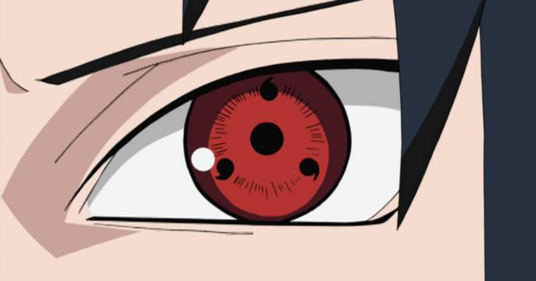
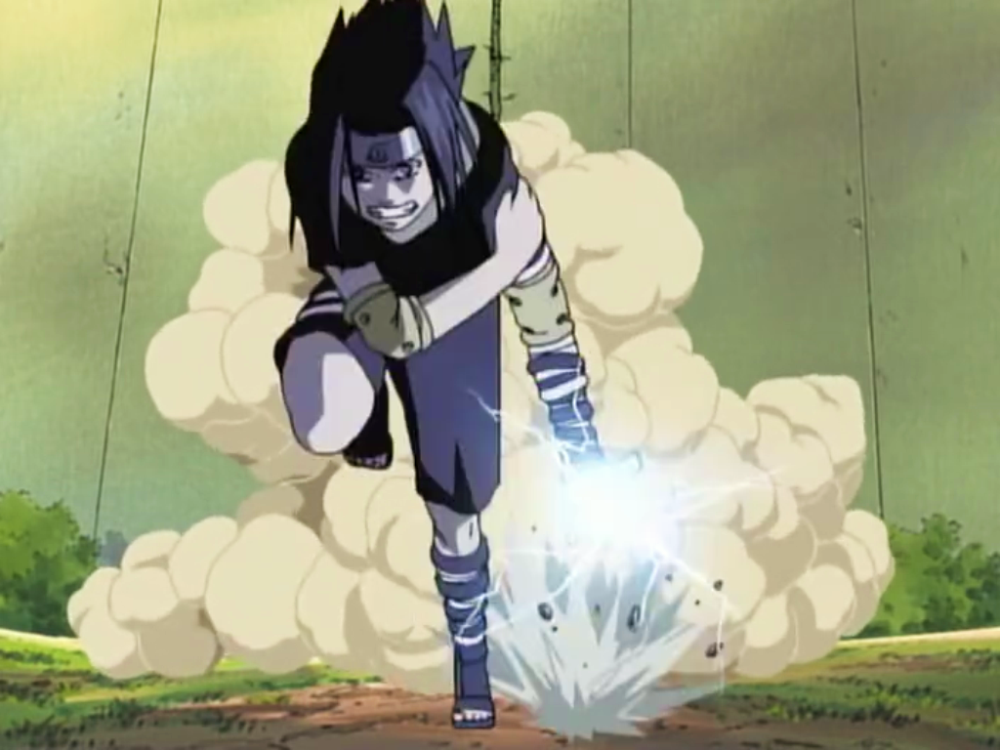
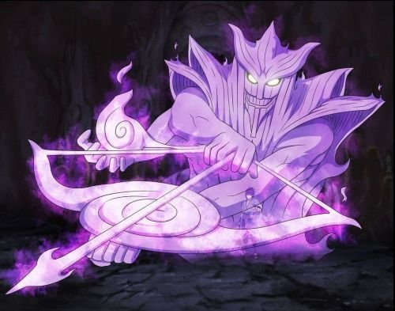
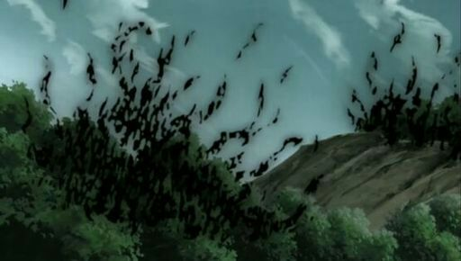
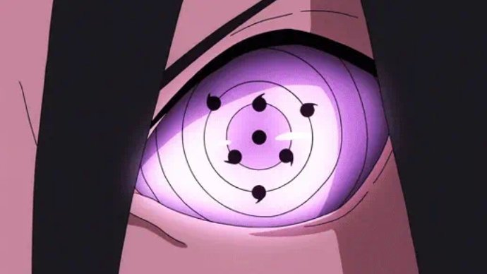

História
 Sasuke Uchiha é o protagonista secundário do anime, integrante do Time 7 com Naruto, Sakura e Kakashi. Conhecido por ser o uníco sobrevivente do massacre dos Uchiha, tem ambição pela vingança contra seu irmão mais velho Itachi, responsavel pelo massacre do próprio clã. Pouco interessado pela Vila, aos 12 anos se tornou um ninja renegado por fungir de Konoha para receber treinamento do Orochimaru, responsável pelo ataque à Konoha e a morte do Terceiro Hokage, a partir dai, Naruto e Sakura começam uma jornada incessante pra resgatar Sasuke da "escuridão" que ele se colocou em busca de sua vingança pessoal.
Principais Técnicas
Estilo fogo: Jutsu Bola de fogo

É o justu básico dos ninjas do clã Uchiha, geralmente aprendem no começo da tragetória Shinobi, foi o caso do Sasuke que ja o dominava antes de se formar na academia.
Sharingan
É uma kekkei Genkai(Técnica génetica) do clã Uchiha, um doujutsu que possui várias habilidades, as principais são: Aumento da percepção dos movimentos do adversário, visão aprimorada, genjutsu, etc. Variações: o Sharingan varia de 1 à 3 tomoes dependendo da evolução do usuário, quanto mais tomoes, mais aprimoradas são suas habilidades. Alguns Uchihas podem despertar o Mangekyou Sharingan, que concede algumas técnicas especiais que podem variar de acordo com o usuário.
Chidori
É uma tecnica elaborada e ensinada pelo Kakashi, utiliza o elemento relâmpago e emite um som semelhante ao grito de mil pássaros, foi capaz de penetrar a defesa absoluta do Gaara. O próprio Sasuke desenvolveu suas variações como o chidori nagashi, que em vez de concentrar a tecnica na palma das mãos, emite ondas de energia por todo o corpo, podendo atingir mais de um alvo.
Susanoo
É uma tecnica concedida à quem desperta o Magenkyou Sharingan, uma armadura forte o suficiente para resistir aos golpes do Quarto Raikage, pode variar de cor e de Habilidades especial dependendo do usuário. O Susanoo do Sasuke possui um arco e flecha que pode ser combinado com o Chidori e as chamas infernais do Amaterasu.
Amaterasu
Essa é uma técnica concedida ao Sharingan do Itachi, que depois de transplantado para o Sasuke, transmitiu à ele suas habilidades. Amaterasu é uma chama que não cessa de queimar até que o seu alvo seja totalmente carbonizado. Sasuke também desenvolveu variações dessa técnica, como o Chidori Kagutsuchi, onde ele combina o chidori com o amaterasu na palma de sua mão.
Rinnegan supremo
Essa técnica foi concedida pelo espírito do sábio dos seis caminhos para enfrentar o Madara na Quarta Guerra Shinobi. Concede uma série de habilidades extremamente 'apelonas', como o Chibaku Tensei, mas de uma forma mais evoluída que o Rinnegan normal. É capaz de entrar em dimensões paralelas, viajar no Espaço-Tempo, combinar Ninjutsus, entre outros. Esse Dōjutsu é uma forma muito mais elevada, porém, Sasuke é capaz de utilizar possuindo um certo limite, assim que acaba, o Rinnegan Supremo volta ao seu período de "recarga" até ser novamente utilizado.